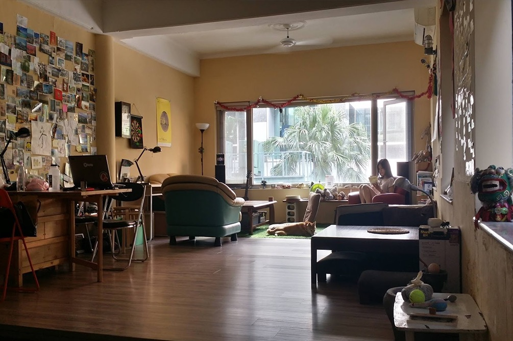
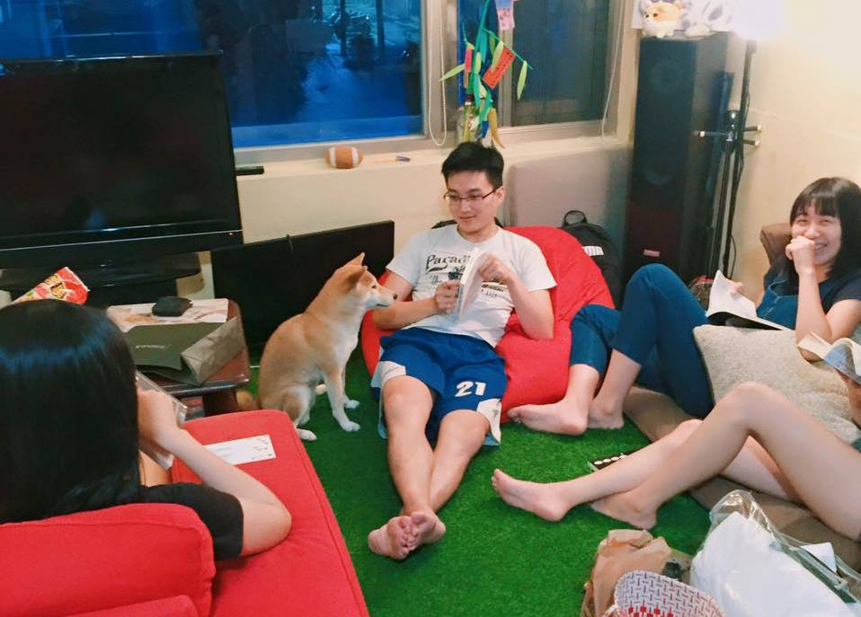

除了一般租屋和青年公宅，租屋菜鳥是否還有其他選擇？事實上，近年來一種被稱為「共生」（Co-Living）的居住型態正在興起。「共生」源自於日本因應高齡化社會推出的「共居」（Co-housing）概念，通常由一個團隊替屋主管理閒置或老舊的住宅，經過重新修繕、裝潢後，為租客媒合室友。
「Zuker租客」創辦人黃聖皓認為，出社會後，幾乎找不到如學校宿舍的共租空間，「好聽一點是有自己的空間，講難聽就像一間間的監獄。」他當初本為解決外籍學生租屋困擾，希望能提供可信任的住宅，後來漸漸發展成共生租屋的模式。他表示，形形色色的人分享同一空間，促成陌生人之間的交流與互動，能讓封閉的交友圈更開放。
房客間的衝突，往往成為管理者最為頭痛的問題，共生空間「角隅」創辦人邱昶學透過篩選房客而找到解方。曾為了在台北就職而找房子的他經歷重重困難，促使他與夥伴合作成立共生租屋「角隅」。邱昶學表示，房客必須填寫申請表，經過兩位創辦人面試，才能入住為「角隅」的一份子。「畢竟住進來後要與來自不同背景的人相處，所以要謹慎審核。」他強調，申請人與未來室友的相處狀況，也可能成為篩選的基準之一。
然而，共生租屋並非適用於所有人。黃聖皓表示，常因住戶間的摩擦而需出面協調，也因此造成許多管理上的麻煩。此外，台灣法律跟不上新形態的租屋模式，稅賦相關規範也不夠完善，「若要合法經營平台，會無法負荷增加的成本。」
內政部於今年二月研擬《租賃住宅市場發展條例》草案，內容新增免費住宅租賃糾紛處理管道，也針對惡房東、惡房客進行規範，強化住宅租賃關係的保障。雖然房東逃漏稅仍未被納入罰則，租屋市場尚無法檯面化，不過張金鶚表示，政府已訂定此專法，看得出有所進展。
張金鶚指出，臺灣人「有土斯有財」的傳統觀念根深蒂固，房子變成投資炒作的工具，再加上房屋相關稅賦不到房價千分之一（美國為百分之一），「寧可空在那裡也不出租。」
「年輕人更不該買房，應該要投資在自己身上。」張金鶚認為，台灣的租市問題之所以特別嚴重，在於房屋已經商品化，居住使用不再是主要目的，持有成本低造成囤房，惡性循環下貧富差距也加大。即使政府有心想改善，但背後盤根錯節的政商關係，牽扯的利益之大，「並不是想像中容易處理。」
「住」，是人類最基本的生理需求之一，更是人人都該擁有的權利。然而，甫出社會或離家的青年，想要擁有屬於自己的一方天地可謂困難重重。傳統租屋狀況多，申請社會住宅卻又處處碰壁，就連最近興起的新型態租屋，也因為現行法律無法跟上而面臨違法的危機。張金鶚語重心長地表示，若政府能從源頭做起，健全租屋市場，「青年根本就不需要去搶社會住宅。」